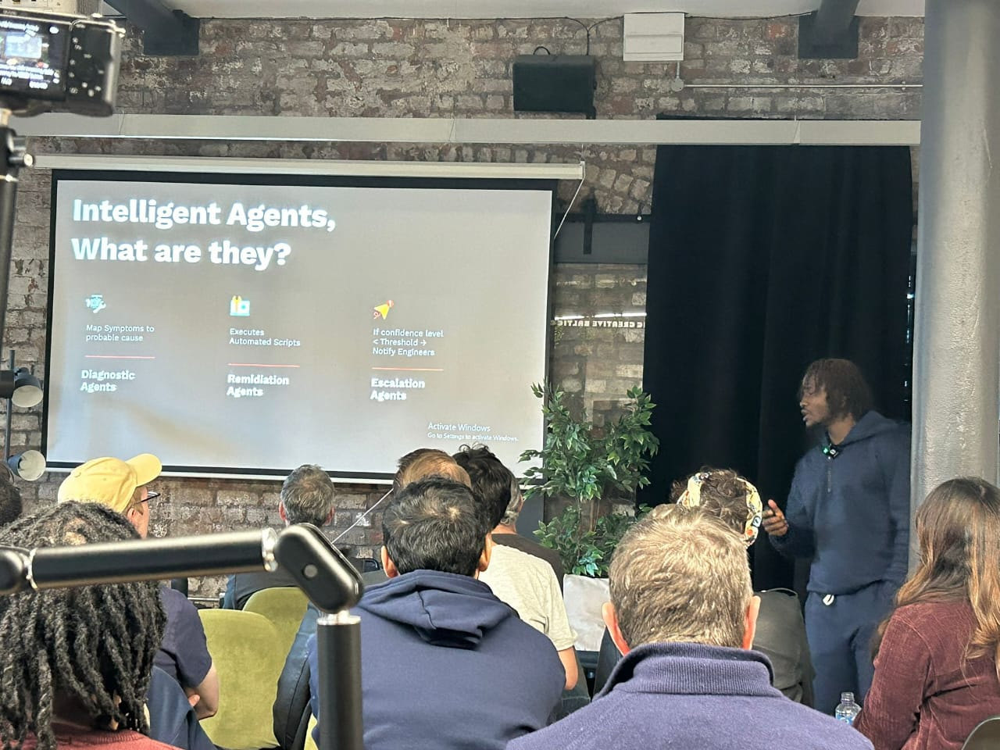

Talk detail
Self Healing Deployment
.NET Meetup Liverpool · Liverpool, UK · April 2026

Talk detail
.NET Meetup Liverpool · Liverpool, UK · April 2026
Event overview
This session explored how AI and ML can improve deployment reliability by predicting failures, automating mitigation, and accelerating recovery. The talk focused on practical implementation patterns for engineering teams transitioning from reactive operations to proactive resilience engineering.
Event media